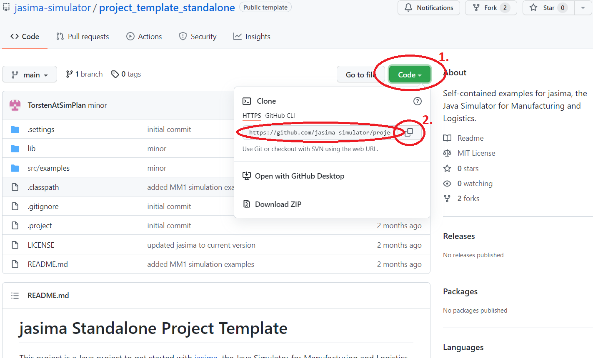
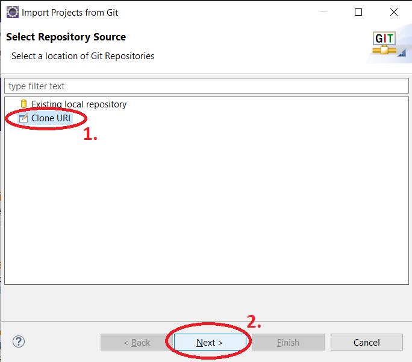
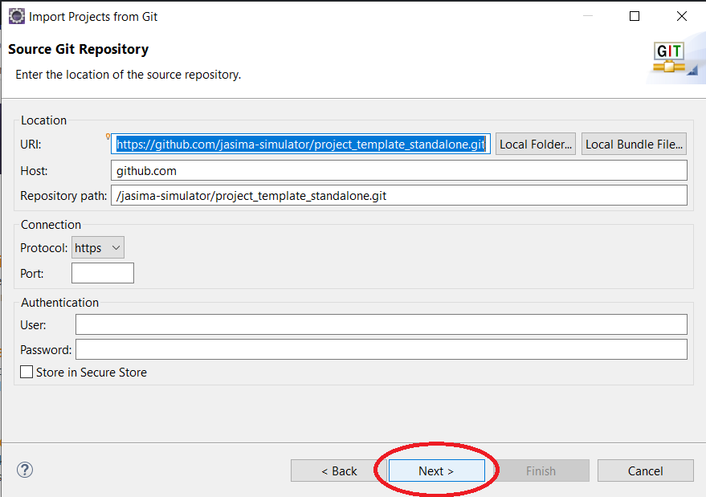
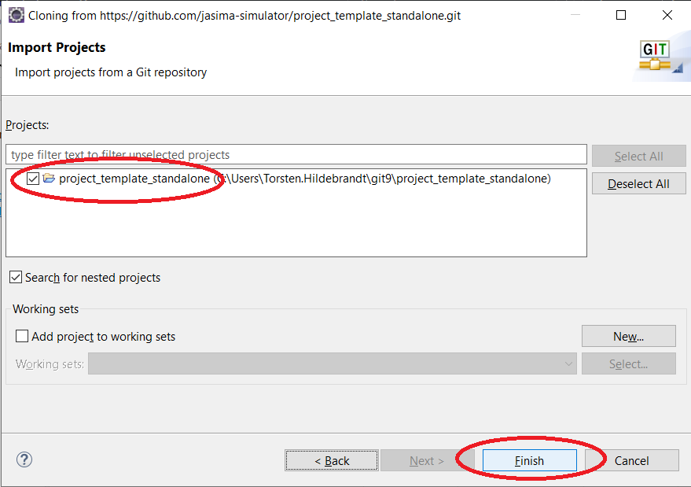
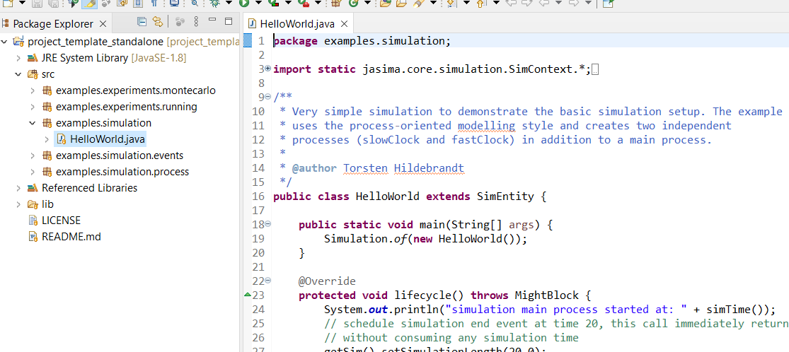
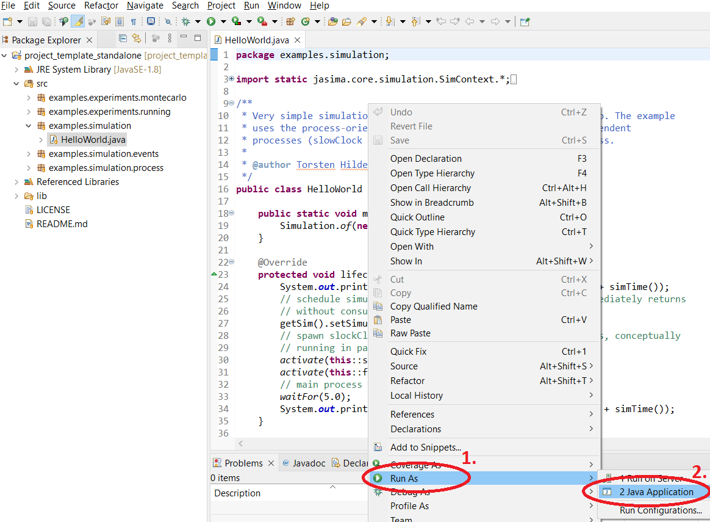

Getting Started
Table of Contents
Introduction
jasima is a Java software library for discrete-event simulation. This page descibes the steps necessary to get started and run a simple "hello world" type example simulation.
Jasima itself requires Java8 or above to run. In order to use jasima a Java IDE is recommended. For the examples on this site Eclipse is used. There are different "Packages" offered on the Eclipse site for download, "Eclipse IDE for Java Developers" should suffice. When using Eclipse, Java doesn’t have to be installed seperately as a Java Runtime Environment is included.
Step 1: Cloning the Project Template from GitHub
There is a standalonejasima project template available at https://github.com/jasima-simulator/project_template_standalone to get new users started more quickly. It contains a Java project with examples and includes a binary version of jasima and its dependencies.
In order to use this project template in Eclipse, we first need the URL of its Git repository. It can be copied from GitHub using the Code button:
Copy the Project Template URL
Using this URL the project can be imported in Eclipse. In a new Eclipse Workspace with the Welcome Screen visible this can be achieved by clicking on "Checkout projects from Git", otherwise via the menue bar (menu File > Import… > Git | Projects from Git). Either way the "Import Projects from Git" dialog should be visible:
Import Dialog 1

As the repository URL was copied to the clipboard in the previous step, the dialog should already be filled with the entries as shown below, so we can continue by directly clicking Next.
Import Dialog 2

We can also continue with Next on the following three pages of the dialog: "Branch Selection" (main branch is correct), "Local Destination" (default directory should be correct in most cases) and "Select a wizard to use…". Finally "Import Projects" should recognize a new project project_template_standalone and we can click on Finish.
Import Dialog Final Page

Step 2: Locate Example Class
If everything worked as expected we should be able to see a new project in the "Project Explorer" and open HelloWorld.java from the package examples.simulation:
Imported Project

Step 3: Run the Simulation
This class contains a main method, so we can excute it by right-clicking on the main-method and selecting Run As > Java Application from the context menu:
Executing Hello World Example

Congratulations, this concludes the getting started guide. We just executed a complete, albeit very simple, simulation run. If everything worked as it should the console should show the following output:
Output of Hello World Example
simulation main process started at: 0.0 slowClock() starting at: 0.0 fastClock() starting at: 0.0 fastClock() executed at: 3.0 simulation main process finished at: 5.0 fastClock() executed at: 6.0 slowClock() executed at: 7.0 fastClock() executed at: 9.0 fastClock() executed at: 12.0 slowClock() executed at: 14.0 fastClock() executed at: 15.0 fastClock() executed at: 18.0
Getting Further
Additional information on jasima is available here:
-
Simulation Basics and additional documentation on this website
-
jasima’s JavaDoc, either to be accessed via a Java IDE, or having a look at the online version (see link above in the navigation bar)
-
checkout and inspect jasima’s source code on GitHub. There is the source code itself in the folder
src/main/java, but also the JUnit tests in the foldersrc/test/javagive examples on how to use certain features -
the Issue Tracker can be used to report bugs, submit feature requests and ask general questions about jasima